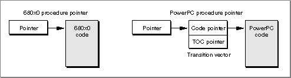
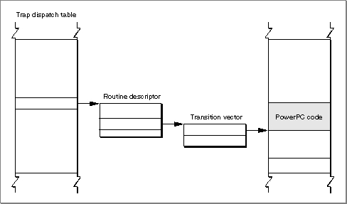
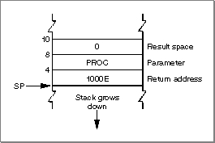
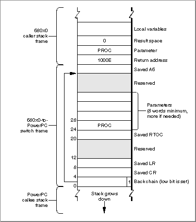
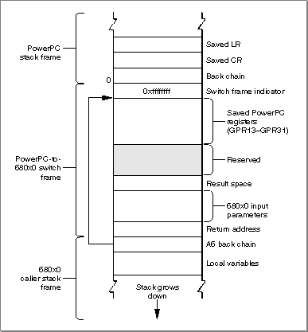

About the Mixed Mode Manager
The Mixed Mode Manager is the part of the Macintosh Operating System that allows PowerPC processor-based Macintosh computers to cooperatively run 680x0 applications, PowerPC applications, 680x0 system software, and PowerPC system software. It provides a number of capabilities, includingIn short, the Mixed Mode Manager is intended to provide both PowerPC processor-
- transparent access to 680x0-based system software from PowerPC applications
- transparent access to PowerPC processor-based system software from 680x0 applications
- a method--independent of the instruction set architecture--of calling an external piece of code. This includes
- transparent access to PowerPC code by 680x0 applications
- system support for calling 680x0 code from PowerPC code
- system support for calling PowerPC code from 680x0 code
- support for patching PowerPC or 680x0 code with PowerPC or 680x0 code
- support for stand-alone code resources containing either 680x0 or PowerPC code
based and 680x0-based code transparent access to code written in another instruction set (or in an instruction set whose type is unknown). It does this by keeping track of what kind of code is currently executing and, when necessary, switching modes. For example, if some PowerPC code calls a Macintosh Operating System routine that exists only in 680x0 form, the Mixed Mode Manager translates the routine's parameters from their PowerPC arrangement (for example, stored in registers GPR3 and GPR4) into the appropriate 680x0 arrangement (for example, stored in registers D0 and D1, with the result placed into register A0).The Mixed Mode Manager is an integral part of the system software for PowerPC processor-based Macintosh computers. It is designed to hide, as much as possible, the dual nature of the operating environment supported on PowerPC processor-based Macintosh computers running the 68LC040 Emulator. Except in specific cases described later, your application or other software should not need to call the routines provided by the Mixed Mode Manager.
External Code
To appreciate when and why you might need to use the routines provided by the Mixed Mode Manager, you need to understand the circumstances in which you might directly or indirectly call code in an instruction set architecture different from that of the calling code. There are several ways to execute external code (code that is not directly contained in your application or software), includingIn any of these four cases, the external code that you call might be in an instruction set architecture that is different from the instruction set architecture of the calling code. (For example, an application that uses the PowerPC instruction set might call a ROM-based Toolbox trap that uses the 680x0 instruction set.) As a result, in all these cases, the Mixed Mode Manager might have to switch environments to allow the called routine to execute and then switch back to allow your application or other software to continue execution.
- calling a trap
- calling a device driver (for example, by calling the driver's Open, Status, or
Control routines)- loading and then executing code contained in a resource
- using the address of a procedure or function obtained from an unknown source
In the first two of the four cases, the Mixed Mode Manager is able to handle all required mode switching virtually transparently to the calling software. In the two last cases, however, you might need to intervene in the otherwise automatic operations of the Mixed Mode Manager. This is because the Mixed Mode Manager cannot tell, from a given pointer to some executable code, what kind of code the pointer references.
The following section describes in greater detail the extent of this problem and the way you need to solve it, using universal procedure pointers in place of procedure pointers. See "Using the Mixed Mode Manager" beginning on page 2-14 for code samples that illustrate how to create and use universal procedure pointers.
Procedure Pointers
For present purposes, a procedure pointer is any reference generated by a compiler when taking the address of a routine. On 680x0-based Macintosh computers, a procedure pointer is simply the address of the routine's executable code (and is defined by theProcPtrdata type). On PowerPC processor-based Macintosh computers, a procedure pointer is the address of the routine's transition vector. Figure 2-1 illustrates the structure of procedure pointers in each environment.Figure 2-1 680x0 and PowerPC procedure pointers

A transition vector is a set of two addresses: the address of the routine's executable code and the address of the fragment's table of contents (TOC).The Macintosh programming interfaces allow you to use procedure pointers in several ways. A procedure pointer can be
As indicated previously, the Mixed Mode Manager cannot tell, from a given procedure pointer, what kind of code the pointer references (either directly through a pointer of type
- passed as a parameter to a system software routine (for example, the
growZoneparameter to theSetGrowZoneroutine)- passed in a field of a parameter block or other data structure (for example, the
gzProcfield of aZoneparameter block)- stored in an application-specific global data structure (for example, the addresses stored in a
grafProcsfield of a graphics port)- installed into a vector accessed through system global variables (for example, the
jGNEFilterglobal variable)- installed into the trap dispatch table or into a patch daisy chain using the
SetToolTrapAddressorSetOSTrapAddressroutineProcPtror indirectly through a transition vector). The Mixed Mode Manager solves this problem by requiring you to use generalized procedure pointers, known as universal procedure pointers, whenever you would previously have used a procedure pointer. A universal procedure pointer is either a normal 680x0 procedure pointer
(that is, the address of a routine) or the address of a routine descriptor, a data structure that the Mixed Mode Manager uses to encapsulate information about an externally referenced routine. A routine descriptor describes the address of the routine, its parameters, and its calling conventions.typedef RoutineDescriptor *UniversalProcPtr;The Macintosh application programming interfaces have been revised for the PowerPC platform to change all references to procedure pointers to references to universal procedure pointers. (The new interfaces are called the universal interface files.) For example, the
- Note
- See "Routine Descriptors" on page 2-37 for a description
of the fields of a routine descriptor.
SetGrowZonefunction was previously declared in the interface fileMemory.hlike this:typedef ProcPtr GrowZoneProcPtr; pascal void SetGrowZone (GrowZoneProcPtr growZone);In the updated interface fileMemory.h,SetGrowZoneis declared like this:typedef UniversalProcPtr GrowZoneUPP; extern pascal void SetGrowZone (GrowZoneUPP growZone);This redefinition of all procedure pointers as universal procedure pointers ensures that at the time a procedure is to be executed, the Operating System has enough information
to determine the routine's instruction set architecture and hence to determine whether
a mode switch is necessary. In addition, if a mode switch is necessary, the universal procedure pointer (if it is a pointer to a routine descriptor) provides information about the routine's calling conventions, the number and sizes of its parameters, and so forth.It's important to understand exactly when you need to be concerned about routine descriptors and when you need to use the new programming interfaces when writing your application. The following cases cover most of the relevant possibilities:
- If your application uses the 680x0 instruction set (and therefore executes under the 68LC040 Emulator on PowerPC processor-based Macintosh computers) and does not support external code modules, you do not need to use routine descriptors or the new programming interfaces.
- If your application uses the PowerPC instruction set, you must use the new program-
ming interfaces.- If your application uses either the 680x0 instruction set or the PowerPC instruction set and makes calls only to code of the same type, you do not need to create routine descriptors.
- If your code uses the PowerPC instruction set and passes a routine's address to code that might be in the 680x0 instruction set, then you need instead to pass the address of a routine descriptor. This applies to all the methods of passing a routine address listed earlier in this section (as a parameter to a system software routine, in a field of a parameter block, and so forth).
- If you create a resource containing PowerPC code that might be called either by 680x0 code or by PowerPC code, that code must be preceded by a routine descriptor. It's possible that the calling code simply loads the resource and jumps to its beginning;
if the resource does not begin with a routine descriptor, the Mixed Mode Manager
will not be called to determine whether a mode switch is necessary. See "Executing Resource-Based Code" on page 2-24 for more details.
- IMPORTANT
- In short, you need to convert procedure pointers to universal procedure pointers only if you pass a routine's address to code that is external to your application. See "Using Universal Procedure Pointers" beginning on page 2-21 for details on making the appropriate modifications to your application.
Mode Switches
This section describes the operations of the Mixed Mode Manager in switching modes (from PowerPC native mode to 680x0 emulation mode, or vice versa). It describes the circumstances under which mode switches are performed and the mechanism that the Mixed Mode Manager uses to switch modes.Every mode switch occurs as a result of either an explicit or an implicit cross-mode
- IMPORTANT
- The information in this section is provided for debugging purposes only. Your application (or other code) should not rely on the details of mode switching presented here.
call. An explicit cross-mode call occurs when the calling software itself calls theCallUniversalProcfunction and passes a universal procedure pointer of a routine that exists in an instruction set architecture other than that of the caller. An implicit cross-mode call occurs when the calling software executes a routine descriptor for a routine that exists in an instruction set architecture other than that of the caller.The mixed-mode architecture of PowerPC processor-based computers running 680x0-
based code gives rise to four possible situations when a piece of code calls a system software routine:
- When 680x0 code calls a system software routine that exists as 680x0 code, the
routine is called directly, using the trap dispatch mechanism provided in the
68LC040 Emulator.- When 680x0 code calls a system software routine that exists as PowerPC code, the routine is called indirectly, using the address--contained in the trap dispatch table--of a routine descriptor, which invokes a mode switch to the PowerPC environment. When the PowerPC code returns, the executing environment is switched back to the 68LC040 Emulator. See the next section, "Calling PowerPC Code From 680x0 Code," for more details.
- When PowerPC code calls a system software routine that exists as PowerPC code, the routine is called through glue in the system software import library. The glue code calls
CallUniversalProc, which determines that the routine is PowerPC code and then calls it directly.- When PowerPC code calls a system software routine that exists as 680x0 code, the routine is called through glue code contained in the system software import library. The glue code sets up a 680x0 universal procedure pointer (which is simply a 680x0 procedure pointer) and executes the 680x0 code by calling the
CallUniversalProcfunction. See "Calling 680x0 Code From PowerPC Code" on page 2-12 for more details.
- IMPORTANT
- Only 680x0 code can make implicit cross-mode calls. Native PowerPC code must always make explicit cross-mode calls. The Mixed Mode Manager determines whether a mode switch is necessary.
Calling PowerPC Code From 680x0 Code
This section describes how the Mixed Mode Manager switches modes from the 680x0 emulated environment to the PowerPC native environment. This usually happens
when 680x0 code calls a system software routine that is implemented in the PowerPC instruction set.Suppose that a 680x0 application calls some system software routine. The application is not aware that it is running under the 68LC040 Emulator, so it just pushes the routine's parameters onto the stack (or stores them into registers) and then jumps to the routine
or calls a trap that internally jumps to the routine. If the routine exists as 680x0 code,
no mode switch is required and the routine is called as usual. If, however, the routine exists as PowerPC code, the calling application must implicitly invoke the Mixed
Mode Manager.If the calling application merely jumps to the PowerPC code, the code must begin with
a routine descriptor, as explained in "Executing Resource-Based Code" on page 2-24. If the calling application calls a trap, the trap dispatch table must contain--instead of the address of the routine's executable code--the address of a routine descriptor for that routine. This routine descriptor is created at system startup time.Figure 2-2 shows the path followed when a 680x0 application calls a system software routine implemented as PowerPC code. The trap dispatch table contains the address
of the native routine's routine descriptor. The routine descriptor contains the address
of the routine's transition vector, which in turn contains the routine's entry point and TOC value.Figure 2-2 Calling PowerPC code from a 680x0 application

For example, suppose that your application calls theCountResourcesfunction,
as follows:myResCount = CountResources('PROC');Suppose further thatCountResourceshas been ported to the PowerPC instruction set. When your application callsCountResources, the stack looks like the one shown in Figure 2-3.Figure 2-3 The stack before a mode switch

The trap dispatcher executes theCountResourcesroutine descriptor, which begins with an executable instruction that invokes the Mixed Mode Manager. The Mixed Mode Manager retrieves the transition vector and creates a switch frame on the stack. A switch frame is a stack frame that contains information about the routine to be executed, the state of various registers, and the address of the previous frame. Figure 2-4 shows the structure of a 680x0-to-PowerPC switch frame.Figure 2-4 A 680x0-to-PowerPC switch frame
- IMPORTANT
- Notice in Figure 2-4 that the low-order bit in the back chain pointer to the saved A6 value is set. The Mixed Mode Manager uses that bit internally as a signal that a switch frame is on the stack. The Mixed Mode Manager will fail if the stack pointer has an odd value.

In addition to creating a switch frame, the Mixed Mode Manager also sets up several CPU registers:At this point, it's safe to execute the native
- The Table of Contents Register (RTOC) must be set to the TOC address of the fragment containing the
CountResourcesroutine. This value is obtained from
the transition vector whose address is extracted from the routine descriptor.- The Link Register (LR) must be set to point to code that cleans up the stack and restarts the emulator.
CountResourcescode. WhenCountResourcescompletes, the Mixed Mode Manager copies the return value from R3 into its proper location (in a register or on the stack). The RTOC, LR, and CR are restored to their saved values, and the switch frame is popped off the stack. The Mixed Mode Manager also pops the return address off the stack, as well as the parameters of routines of typepascal. Finally, the Mixed Mode Manager jumps back into the 68LC040 Emulator and the application continues execution.Calling 680x0 Code From PowerPC Code
This section describes how the Mixed Mode Manager switches modes from the PowerPC native environment to the 680x0 emulated environment. This usually happens when PowerPC code calls a system software routine that is implemented in the 680x0 instruction set.For example, suppose that a PowerPC application calls a system software routine that exists only as 680x0 code. In the system software import library must exist a small piece of glue code that
Listing 2-1 illustrates a sample glue routine for the QuickDraw text-measuring routine
- allocates space on the stack for the routine's result, if any
- determines the address of the 680x0 routine from the trap dispatch table
- provides the procedure information for the routine
- calls the
CallUniversalProcfunctionTextWidth.Listing 2-1 Sample glue code for a 680x0 routine
- IMPORTANT
- Glue routines like the one illustrated in Listing 2-1 are part of
the system software import library. You do not need to write
glue routines like this.enum { uppTextWidthProcInfo = kPascalStackBased | RESULT_SIZE(kTwoByteCode) | STACK_ROUTINE_PARAMETER(1, kFourByteCode) | STACK_ROUTINE_PARAMETER(2, kTwoByteCode) | STACK_ROUTINE_PARAMETER(3, kTwoByteCode) }; short TextWidth (Ptr textBuf, short firstByte, short byteCount) { ProcPtr textWidth_68K; textWidth_68K = NGetTrapAddress(_TextWidth, ToolTrap); return CallUniversalProc((UniversalProcPtr)textWidth_68K, uppTextWidthProcInfo, textBuf, firstByte, byteCount); }See "Specifying Procedure Information" beginning on page 2-14 for a description of the constants and macros used to define the procedure information (that is, themyProcInfoparameter).The call to
- Note
- For Operating System traps (that is, traps of type
OSTrap), the
trap dispatcher copies the trap number into register D1. As a result,
the glue code illustrated in Listing 2-1 would need to call the
functionCallOSTrapUniversalProc.CallUniversalProcinvokes the Mixed Mode Manager, which verifies that a mode switch is necessary. At that point, the Mixed Mode Manager saves all nonvolatile registers and other necessary information on the stack in a switch frame. Figure 2-5 shows the structure of a PowerPC-to-680x0 switch frame.Figure 2-5 A PowerPC-to-680x0 switch frame

Once the switch frame is set up, the Mixed Mode Manager sets up the 68LC040 Emulator's context block and then jumps into the emulator. When the routine has finished executing, it attempts to jump to the return address pushed onto the stack. That return address points to a mode-switching structure contained in the Reserved area in the switch frame. The emulator encounters the instruction in thegoMixedModeTrapfield of the routine descriptor and then saves the current 680x0 state in its context block. Once this is done, the Mixed Mode Manager restores native registers that were previously saved and deallocates the switch frame. Control then returns to the caller ofCallUniversalProc.
- IMPORTANT
- As currently implemented, the instruction that causes a return from the 68LC040 Emulator to the native PowerPC environment clears the low-order 5 bits of the Condition Code Register (CCR). This prevents 680x0 callback procedures from returning information in the CCR. If you want to port 680x0 code that calls an external routine that returns results in the CCR, you must instead call a 680x0 stub that saves that information in some other place.